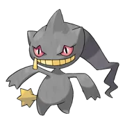
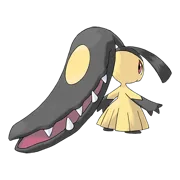
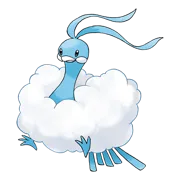
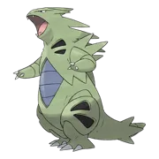
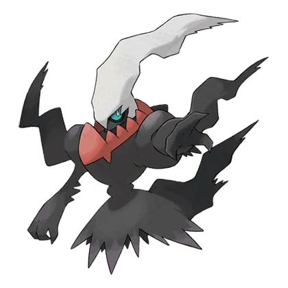
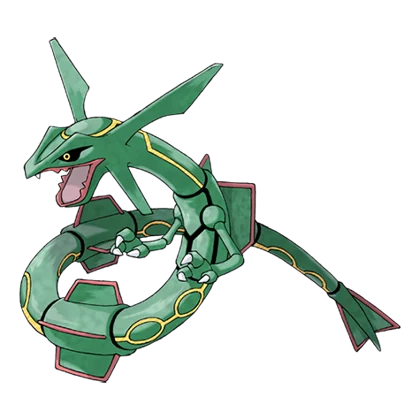
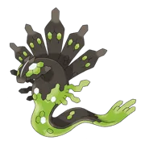

Search by species, district, mission, counter or move. The original PDF order is preserved.
No bosses match that search. Try a species or mission number.
First Mega encounter
Rogue Mega Absol
Dark
COUNTER EXAMPLEAZ’s Lucario
MOVE PLANAura Sphere + Rock Smash
Weak to: Fighting · Bug · Fairy
Watch for: A broad Dark Pulse blooms around Absol.
Use the Lucario lent to you for this fight. Attack to release Mega Power, collect the orbs and Mega Evolve Lucario. Leave the large Dark Pulse circle before it hits, then use Fighting moves during Absol’s recovery.
Bleu district · Mission 11
Rogue Mega Slowbro
Water / Psychic
COUNTER EXAMPLEPikachu
MOVE PLANThunder Shock → Thunderbolt
Weak to: Grass · Electric · Bug · Ghost · Dark
Watch for: Slowbro hops between positions and casts whirlpools.
Circle the edge of the island, dodge the splash, and fire Electric moves while Slowbro settles. Grass also hits its Water side.
Jaune district · Mission 12
Rogue Mega Camerupt
Fire / Ground
COUNTER EXAMPLEGyarados
MOVE PLANWaterfall
Weak to: Water ×4 · Ground
Watch for: Camerupt scatters volcanic rocks before a chained detonation.
Reach the rooftop first. Move to clear floor as the rocks land, then exploit its 4× Water weakness after the blast. Croconaw’s Aqua Jet works if you chose Totodile.
Magenta district · Mission 13
Rogue Mega Victreebel
Grass / Poison
COUNTER EXAMPLEFletchinder
MOVE PLANFlame Wheel
Weak to: Fire · Flying · Psychic · Ice
Watch for: Poison pools linger where Victreebel’s Sludge Bomb lands.
Avoid the pools and the close Power Whip. Attack from a clean side of the arena; Psychic coverage works too.
Vert district · Mission 16
Rogue Mega Beedrill
Bug / Poison
COUNTER EXAMPLETalonflame
MOVE PLANFlame Wheel → Flare Blitz
Weak to: Fire · Flying · Psychic · Rock
Watch for: Beedrill calls in Kakuna and winds up a stream of homing pins.
Keep moving through the volley and ignore the decoys when safe. Fire or Flying damage catches its short recovery.
Magenta district · Mission 17
Rogue Mega Hawlucha
Fighting / Flying
COUNTER EXAMPLEManectric
MOVE PLANSpark → Thunderbolt
Weak to: Electric · Ice · Flying · Psychic · Fairy
Watch for: Hawlucha rises before a large Flying Press shockwave.
Run out of the landing circle, then strike with Electric. A Fairy move from Gardevoir is a good backup.
Jaune district · Mission 18
Rogue Mega Banette
Ghost
COUNTER EXAMPLEAbsol
MOVE PLANNight Slash
Weak to: Ghost · Dark
Watch for: Banette produces Double Team decoys and rushes with Shadow Claw.
Find the real target between casts; do not spend the whole move cycle on copies. Dark attacks punish its Ghost typing.
Magenta district · Mission 21
Rogue Mega Mawile
Steel / Fairy
COUNTER EXAMPLECamerupt
MOVE PLANEarth Power
Weak to: Fire · Ground
Watch for: Mawile chases up close and later throws exploding energy into the arena.
Keep the Trainer mobile until the volley ends. Ground or Fire is super effective against its Steel/Fairy form.
Bleu district · Mission 22
Rogue Mega Barbaracle
Rock / Water
COUNTER EXAMPLEGogoat
MOVE PLANSeed Bomb
Weak to: Grass ×4 · Electric · Fighting · Ground
Watch for: Barbaracle can summon Binacle before a charging Close Combat sequence.
Clear room to dodge the charge. Grass hits Rock/Water for 4×; do not stand in front while it winds up.
Rouge district · Mission 23
Rogue Mega Ampharos
Electric / Dragon
COUNTER EXAMPLEGardevoir
MOVE PLANMoonblast
Weak to: Ground · Ice · Dragon · Fairy
Watch for: Ampharos charges Discharge, leaving dangerous electric patches.
Retreat during the glow, wait for a clean patch, then use Fairy or Ground. Dragon attacks are riskier against its Dragon moves.
AymLis Park · Mission 27
Rogue Mega Froslass
Ice / Ghost
COUNTER EXAMPLEAbsol
MOVE PLANNight Slash
Weak to: Fire · Rock · Ghost · Dark · Steel
Watch for: Froslass raises two waves of ice, then follows with Blizzard.
Avoid the first fall; use the ice pillars from the second as cover. Counter with Dark or Fire when Blizzard ends.
Magenta district · Mission 28
Rogue Mega Altaria
Dragon / Fairy
COUNTER EXAMPLESkarmory
MOVE PLANSteel Wing
Weak to: Ice · Poison · Steel · Fairy
Watch for: Altaria’s giant Twister sends smaller cyclones outward.
Dodge across the gaps between cyclones. Its Mega form is Dragon/Fairy: Steel is strong, and Dragon does no damage. Skarmory is available after Zone 17 opens.
Jaune district · Mission 29
Rogue Mega Venusaur
Grass / Poison
COUNTER EXAMPLETalonflame
MOVE PLANFlare Blitz
Weak to: Fire · Ice · Psychic · Flying
Watch for: Venusaur lays a thorn field and then charges Solar Beam.
Clear thorns with Fire or Flying attacks, move out of the beam line and hit its Grass/Poison form from range.
Vert district · Mission 32
Rogue Mega Dragonite
Dragon / Flying
COUNTER EXAMPLEAbomasnow
MOVE PLANIce Beam → Blizzard
Weak to: Ice ×4 · Rock · Dragon · Fairy
Watch for: Dragonite chains Hurricane, stray lightning and a later central Hyper Beam.
Ice strikes its Dragon/Flying typing for 4×. Preserve stamina for the beam warning; dodge before casting.
Jaune district · Mission 33
Rogue Mega Tyranitar
Rock / Dark
COUNTER EXAMPLEMachoke
MOVE PLANBrick Break
Weak to: Fighting ×4 · Water · Grass · Ground · Bug · Steel · Fairy
Watch for: Tyranitar throws lines of Stone Edge, widening the pattern later.
Run across the line rather than along it. Fighting hits Rock/Dark for 4×; commit after the stone wave passes. Machop is found in Zone 8.
Bleu district · Mission 34
Rogue Mega Starmie
Water / Psychic
COUNTER EXAMPLEManectric
MOVE PLANThunderbolt
Weak to: Grass · Electric · Bug · Ghost · Dark
Watch for: Starmie glows purple, rushes repeatedly and finishes with Hydro Pump.
Dodge sideways through each dash. Return Electric or Dark damage after the final water blast.
Mega Dimension / Hyperspace
Mega Absol Z
Dark / GhostCOUNTER EXAMPLEGardevoir
MOVE PLANMoonblast
Weak to: Fairy
Watch for: The charged attack changes the safe part of the arena.
Watch for repeated Shadow Claw waves; Fighting does no damage to the Ghost half.
Mega Dimension / Hyperspace
Mega Staraptor
Fighting / Flying
COUNTER EXAMPLEManectric
MOVE PLANThunderbolt
Weak to: Electric · Ice · Fairy
Watch for: The charged attack changes the safe part of the arena.
Move sideways when it dives, then counter after the slash across the arena.
Mega Dimension / Hyperspace
Mega Tatsugiri
Dragon / Water
COUNTER EXAMPLEGardevoir
MOVE PLANMoonblast
Weak to: Fairy · Dragon
Watch for: The charged attack changes the safe part of the arena.
Avoid the falling blobs and its Surf lane. Electric and Grass are neutral against Dragon/Water.
Mega Dimension / Hyperspace
Mega Meowstic
Psychic
COUNTER EXAMPLEAbsol
MOVE PLANNight Slash
Weak to: Bug · Ghost · Dark
Watch for: The charged attack changes the safe part of the arena.
Get behind its barrier and land several hits before it explodes.
Mega Dimension / Hyperspace
Mega Heatran
Fire / Steel
COUNTER EXAMPLEGarchomp
MOVE PLANEarthquake
Weak to: Ground ×4 · Water · Fighting
Watch for: The charged attack changes the safe part of the arena.
Leave the magma orbs alone while they arm; move through a clear gap after the ring blast.
Mega Dimension / Hyperspace
Mega Darkrai
Dark
COUNTER EXAMPLEGardevoir
MOVE PLANMoonblast
Weak to: Fighting · Bug · Fairy
Watch for: The charged attack changes the safe part of the arena.
Two phases. Cure drowsiness and look for the safe gaps in the falling energy.
Mega Dimension / Hyperspace
Primal Groudon
Ground / Fire
COUNTER EXAMPLEGarchomp
MOVE PLANEarthquake
Weak to: Ground
Watch for: The charged attack changes the safe part of the arena.
Two phases. Water stops working in the Primal phase; follow the safe patch as lava shifts.
Mega Dimension / Hyperspace
Primal Kyogre
Water
COUNTER EXAMPLEManectric
MOVE PLANThunderbolt
Weak to: Electric · Grass
Watch for: The charged attack changes the safe part of the arena.
Two phases. Dodge the rotating Origin Pulse beams; Fire stops working in the Primal phase.
Mega Dimension / Hyperspace
Mega Rayquaza
Dragon / Flying
COUNTER EXAMPLEGardevoir
MOVE PLANMoonblast
Weak to: Ice · Fairy · Dragon
Watch for: The charged attack changes the safe part of the arena.
Two phases. Its Mega form changes the usual Flying weakness; strike the summoned twister and avoid Meteor Beam.
Mega Dimension / Hyperspace
Mega Zeraora
Electric
COUNTER EXAMPLEGarchomp
MOVE PLANEarthquake
Weak to: Ground
Watch for: The charged attack changes the safe part of the arena.
Dodge the first three Plasma Fists; the later zigzag pattern needs a longer sideways route.
Postgame / Legendary
Zygarde Complete
Dragon / Ground
COUNTER EXAMPLEAbomasnow
MOVE PLANIce Beam
Weak to: Ice ×4 · Fairy · Dragon
Watch for: The phase transition changes its attack pattern.
The 10%, 50% and Complete phases change the arena. Watch the ground for the large Core Enforcer pattern, move into the gaps and resume Ice damage after it passes.
Ultimate challenge
Rogue Mega Rush
Boss gauntlet⚔COUNTER EXAMPLEGardevoir + Manectric + Lucario
MOVE PLANMoonblast + Thunderbolt + Close Combat
Weak to: Team coverage
Watch for: The phase transition changes its attack pattern.
Bring one balanced party for the full run. Bag items are unavailable. Use moves that restore HP and save the three between-fight party heals for when several teammates need them. See the full fight order and unlock checklist.